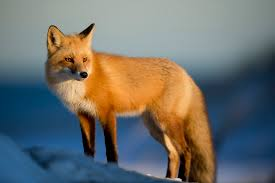

Cat is a small domesticated carnivorous mammal with soft fur, a short snout, and retractable claws. It is widely kept as a pet or for catching mice, and many breeds have been developed.
fox is a carnivorous mammal of the dog family with a pointed muzzle and bushy tail, proverbial for its cunning.

panda is a large bearlike mammal with characteristic black and white markings, native to certain mountain forests in China. It feeds almost entirely on bamboo and has become increasingly rare.

rabbit is a burrowing, gregarious, plant-eating mammal with long ears, long hind legs, and a short tail.

tiger is a very large solitary cat with a yellow-brown coat striped with black, native to the forests of Asia but becoming increasingly rare.
 sheep is a domesticated ruminant animal with a thick woolly coat and (typically only in the male) curving horns. It is kept in flocks for its wool or meat, and is proverbial for its tendency to follow others in the flock.
sheep is a domesticated ruminant animal with a thick woolly coat and (typically only in the male) curving horns. It is kept in flocks for its wool or meat, and is proverbial for its tendency to follow others in the flock.